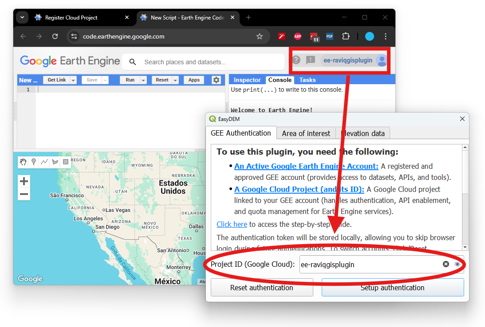
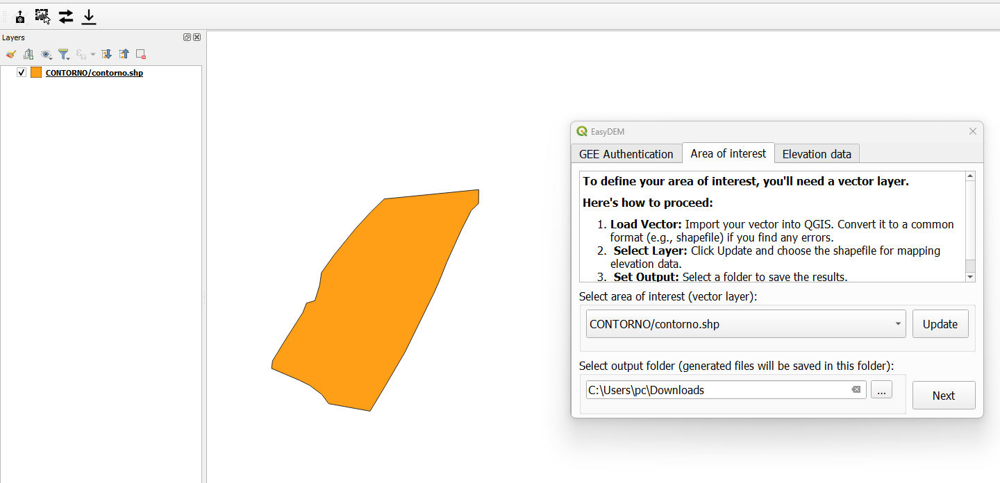
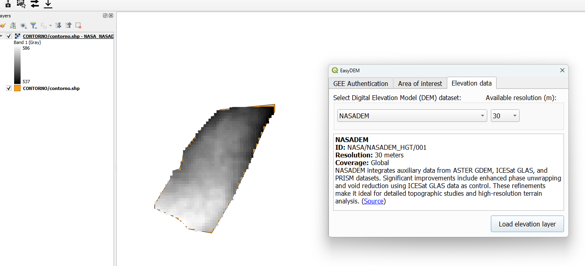

EasyDEM QGIS Plugin
Multiple DEM datasets via Google Earth Engine API
About EasyDEM
EasyDEM is a QGIS plugin that enables you to easily access and download multiple Digital Elevation Models (DEMs) from Google Earth Engine. With a seamless integration into QGIS, you can quickly visualize and analyze topography from datasets such as NASADEM, ASTER GED, COPERNICUS DEM, JAXA ALOS, and USGS GMTED2010.
Features
- Access Multiple DEM Datasets: Quickly access and visualize various DEM datasets from GEE catalogs including:
Installation
Via QGIS Plugin Manager
- Open QGIS.
- Navigate to
Plugins > Manage and Install Plugins. - Search for EasyDEM.
- Click Install.
- MUST DO: Restart QGIS to activate the plugin.
Once installed, access DEM data by opening the plugin toolbar or icon, authenticating your Google Earth Engine (GEE) account, choosing your Area of Interest (vector layer) and output folder, and selecting your desired DEM dataset.
Step-by-Step Guide
- Initial Setup: 
- Area of Interest Selection: 
- DEM Dataset Selection: 
Contribution
Contributions to the EasyDEM plugin are welcome! Feel free to submit bug reports, feature requests, or pull requests.
License
This project is licensed under the GNU GENERAL PUBLIC LICENSE. See the LICENSE file for more details.